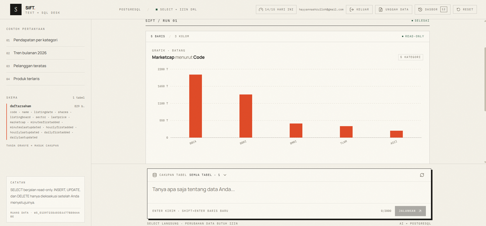

SIFT — TEXT-TO-SQL DESK
Upload data sendiri, tanya pakai bahasa Indonesia, dapat tabel dan SQL-nya. Satu akun dapat satu schema PostgreSQL sendiri, dan query yang mengubah data nggak pernah jalan tanpa persetujuan.
01 // MASALAH
Orang yang nggak tahu SQL tetap mau bertanya pada datanya sendiri. Tapi text-to-SQL yang menghasilkan query sembarangan dua risikonya: data akun lain bisa ikut terbaca, dan query destruktif bisa jalan tanpa sadar.
Saya mau antarmuka yang bisa dipakai orang awam, tapi aturan keamanannya nggak cuma mengandalkan prompt LLM.
02 // ALUR & KEPUTUSAN
Alur satu pertanyaan: verifikasi Bearer token → cek kuota harian → baca skema workspace secara real-time → prompt ke Groq (fallback Gemini) → bersihkan output → validasi SQL → SELECT jalan read-only, DML ditahan dulu.
- Satu akun, satu schema. Tiap akun Supabase punya schema
ws_<24 hex>. Setiap transaksi diarahkan denganSET LOCAL search_path, dan query yang menyebut schema lain ditolak403. - Validasi bukan cuma string matching. Output LLM melewati validator berbasis state machine yang paham komentar, string literal, quoted identifier, dan dollar-quoted block — jadi kata terlarang nggak bisa disembunyikan di dalam komentar.
- SELECT dan DML dibedakan. SELECT jalan dalam transaksi
READ ONLYdenganstatement_timeout60 detik. INSERT/UPDATE/DELETE dikembalikan sebagai usulan dan baru jalan lewat/api/execute_confirmedsetelah pengguna menyetujui — dengan validasi ulang seluruh aturan. - Fallback penyedia. Groq
openai/gpt-oss-120bjadi utama, Gemini cadangan. Kalau penyedia gagal, kuota dikembalikan.

03 // BATASAN YANG SENGAJA DICATAT
Ini bagian yang paling saya jaga jujurnya. Beberapa hal memang belum beres:
- Belum ada suite pengujian otomatis dan CI (pytest, Playwright, lint) — masih di roadmap.
- Role database belum dipisah: SELECT dan DML pakai
DATABASE_URLyang sama, dan isolasi ditegakkan backend lewatsearch_path, bukan RLS per tabel. - Belum ada audit log untuk DML yang disetujui, dan belum ada pagination hasil query.
- Rate limit masih in-memory — reset saat instance restart dan nggak dibagi antar-instance.
- Prompt skema dipotong kalau database lebih dari 40 tabel / 80 kolom per tabel / 24.000 karakter, dan eksekusi SELECT belum memaksa batas baris.
API_ACCESS_KEYadalah jalur lama untuk schemapublicdan nggak boleh aktif di produksi; mode publik yang dipakai sekarang login-only.
Saya lebih memilih menuliskan ini di depan daripada mengklaim SIFT "aman produksi" tanpa bukti.
04 // BUKTI & STATUS
| Komponen | Status |
|---|---|
| Frontend | sql-analysis.vercel.app |
| Backend API | sql-analysis-el64.vercel.app |
| Auth & DB | Supabase Auth + PostgreSQL |
| Akses publik | Login Google atau email + kata sandi |
| LLM | Groq utama, Gemini cadangan |
| Kuota | 15 pertanyaan / akun / hari (UTC) |
05 // YANG BELUM SELESAI
Role database terpisah, endpoint hapus akun, audit log, pratinjau dampak query via EXPLAIN, pagination, dan test suite + CI. Semuanya masih terbuka di README repository.